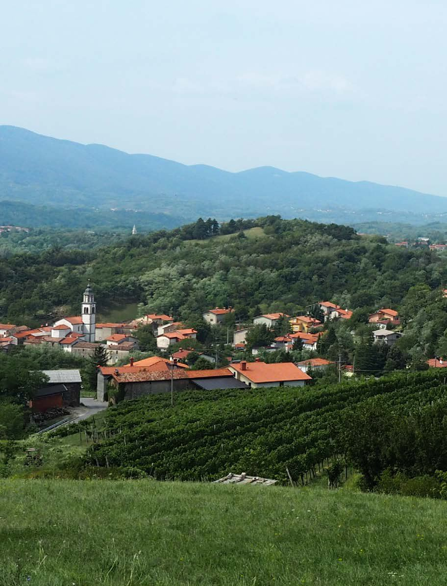

European Days of Terraced Landscapes 2019: Vrtovin, Vipava Valley, Slovenia
International Terraced Landscapes Alliance Journal volume 3, issue 2, pp. 8–25 (2025) · Cite this article
- 0 views
- 0 downloads

Abstract
Describes a collaborative event that united local residents, masons, students, and researchers to restore terraces, share knowledge, and celebrate the living heritage of Vipava Valley.
Introduction: Why Vrtovin, Why (Now) Then
When we first proposed to host the European Days of Terraced Landscapes (EDTL) in Vrtovin, a village on the northern rim of Slovenia’s Vipava Valley, our aim was modest yet urgent: to bring practitioners, researchers, local authorities, and—crucially—residents together around very concrete actions that sustain drystone terrace culture. We wanted to celebrate the craft, hear the many local voices that carry terrace knowledge, and—stone by stone—repair what neglect and time had loosened.
The municipality of Ajdovščina accepted the challenge with warmth and speed; the Aqua Turris Association and ITLA Slovenia offered on-the-ground leadership; and the Faculty of Architecture, University of Ljubljana anchored the program with a pedagogical frame. Our schedule spanned three intense days—23–25 August 2019—linking formal exchange with hands-on repair, food with song, and local walks with regional excursions. The children of the local school joined us; so did terrace farmers, masons, municipal leaders, and members of the International Terraced Landscapes Alliance. All came with open hands and sleeves rolled up.
This is an account as one of the organizers—meant as a record, a guide for future editions, and a tribute to the community that made EDTL Vrtovin 2019 both practical and memorable.

The Setting and the People
Vrtovin is part of the Municipality of Ajdovščina, perched where the Vipava Valley tightens into slopes articulated by drystone terraces. There is no better auditorium for a conversation on terraces than the terraces themselves: above the Elementary School of Vrtovin, where our repair workshop unfolded; in community halls where intergenerational stories traveled; and in vineyards and cellars where terroir is literally stored for patient timekeeping. Locally, our hosts were the activists of the Aqua Turris Association, who anchored logistics and hospitality; their welcome set the tone for the entire meeting.
Program Logic
We designed the program to proceed from listening to doing to reflecting. Day 1, Friday 23 August 2019, opened at the Elementary School Dobravlje in Črniče, with a municipal greeting, voices from agriculture and research, ITLA perspectives, and an evening repair workshop and picnic in Vrtovin. Day 2, Saturday 24 August, began with a local market breakfast, continued with a hike to St. Paul’s, then a bus excursion to Vipavski Križ and Zemono Manor, a communal lunch, a cellar visit and tasting, and an open conversation on how to live in the future in a terraced landscape and how to decolonize the mind. Day 3, Sunday 25 August, was dedicated to an ITLA committee meeting in Goriška Brda focusing on follow-up and planning.

The careful alternation of talk and touch—of speech, walking, and doing—was intentional. A terrace is neither a museum artifact nor a slide; it is a living, working interface between gravity, water, soil, plant, and people. Our program had to embody that.
Friday, 23 August — Opening the Circle
Words that Set a Worksite
At 14:00 we convened in the school hall in Črniče. The mayor of Ajdovščina, Tadej Beočanin, welcomed participants and framed the municipality’s commitment to terraced landscapes as both cultural heritage and environmental infrastructure. Immediately after, the school community presented a moving three-generations sequence: children, their parents and teachers, and grandparents living in a terraced landscape shared a year of research and recollections. Their narratives were vivid and specific, bringing into the room the cadence of seasonal work and the material memory of stones. Following a short break, the region’s agricultural voice came through Branimir Radikon, director of the Institute of Agriculture and Forestry Nova Gorica, who contextualized terrace agriculture in contemporary production systems. Local civil society took the floor next: Neli Kandus and Magda Saksida presented the Aqua Turris Association as a caretaker initiative for Vrtovin’s terraces—an example of bottom-up stewardship.


Lučka Ažman then offered two key overviews, The Vipava Valley and Terraced Landscapes and Slovenian Terraced Landscapes, mapping the national diversity of forms and the valley’s specific morphologies and uses. On the international arc, Timmi Tillmann, ITLA coordinator, re-inscribed our local work within the global movement for terrace recognition and revitalization, while Sabine Gennai Schott from ITLA Italy introduced Monte Pisano as a case of municipal coordination for terrace learning and management. Each presentation was practical; each set expectations for learning by doing the next day.


From Talk to Stone: The First Wall
At 17:00 we moved to the terraced landscape above the Elementary School Vrtovin. Under the guidance of Mitja Kobal, we formed crews and repaired a fallen section of drystone wall. The site was chosen for visibility and safety; the method: traditional, mortarless coursing with sound backing—never fill the back with soil, as masons everywhere will insist. Hands learned fast. Neighbors joined us. Children fetched chinking stones; elders watched alignment and weight. The intent was not photogenic performance but competent repair: selecting, turning, feeling the stone click into place. In less than two hours, the face of the wall—once a loose pile—read again as a single, continuous line.


Songs and Supper
At 20:00 the community hosted a picnic with local songs from Vrtovin, the Vipava Valley, and the Littoral. Food was straightforward: bread, cured meats, cheeses, seasonal fruit; wine that traveled without introductions. The choir brought in melodies older than the asphalt we had walked; and yet, surrounded by repaired stone, the mood felt wholly contemporary: a village rehearsing its future by rehearsing its songs.
Saturday, 24 August — Markets, Walks, and Ways of Knowing
Morning Market as Curriculum
By 8:00 a community market had formed in Vrtovin. We deliberately placed breakfast there; markets compress networks—growers, bakers, producers, buyers—into a single space where a terrace’s productivity is tangible and edible. Here, the Aqua Turris team and neighbors showcased local products; the market also served as a hub for newcomers, maps, and ad-hoc carpools.
The Hike to St. Paul’s
At 10:00 we set out uphill toward St. Paul’s Church. The path is a primer in terrace logic: slope, contour, and retaining rhythms reveal themselves differently with every curve; orchard parcels transition to scrub and forest; views fold and unfold. We used the walk as a mobile seminar: pointing out wall construction details, drainage logic, variations in stone sourcing, and the tell-tale gradients where failure begins. At rest points, farmers offered micro-stories—why this vine row ends where it does; where water can be heard after a week of dry wind; which wall was raised after a winter that moved three boulders. The hike taught not only what to see, but how the landscape asks to be read.
Afternoon Excursion: Vipavski Križ and Zemono
At noon we boarded a bus for a regional loop—Vipavski Križ and Zemono Manor— sites chosen to triangulate terrace culture with settlement form and foodways. Vipavski Križ, one of the smallest towns in Slovenia, reads as a compact, walled organism whose proximity of stone, street, and slope offshore ideas for terrace-settlement interfaces. Zemono—an elegant manor with its own viticultural story—carried us toward the table. The excursion was sponsored so that cost would not be a barrier—solidarity that matched the day’s communal spirit.
Lunch, Cellars, and a Vocabulary of Taste
By 15:00 we regrouped at Arkade turizem in Črniče for a lunch of typical Vipava dishes—a structured tasting of place. Afterwards at Brnik, we visited a wine cellar, tasted, compared notes, bought bottles, and—importantly—listened to cellar talk about terraced vineyard maintenance and climate variability. Wine is the valley’s liquid archive; its vocabulary—acidity, structure, length—can be read back into slope, soil, and stone. In the evening we reconvened for closing reflections, using a prompt that had guided the entire day: how shall we live in a terraced landscape in the future. We borrowed ITLA’s nudge to decolonize the mind, which in our case meant auditing our own assumptions about efficiency, aesthetics, and labor.


Sunday, 25 August — Itla Committee in Goriška Brda
The final day began at 9:00 with an ITLA Committee meeting in Goriška Brda. Breakfast was working food; lunch concluded the session. We reviewed Vrtovin’s outcomes, the 2019 La Gomera congress, and the next steps for European collaborations. We left with a sobering clarity: terraces will not steward themselves; they require daily practice, policy coherence, and public pride—preferably in that order.

Methods and Pedagogy
We adopted four simple didactic strands. First, walk the landscape. Use hikes and short walks to scaffold observation. Teach people to see slope, line, voids, bulges, and chinking. Second, work the stone. Even brief repair tasks change the body’s understanding—weight, balance, edge, and the way a good stone finds its place. Third, eat the place. Markets, lunches, and tastings translate terrace ecologies into flavors and textures—making intangible value tangible. Fourth, listen to local voices. Children, farmers, masons, and winemakers speak the most precise ecological language. Curate their voices as the primary content.
These strands echo approaches documented in other EDTL contexts and ITLA practice, where educational programming pairs observation and making, and where living heritage is both end and means.
What We Repaired and What We Learned
We did not set a linear-meter target for the Friday wall repair—our focus was on quality and transmission of technique. Still, the crews restored a meaningful length of the face and stabilized the terrace shoulder above the school grounds. We emphasized sound foundation and batter, reading the original line and respecting inherited geometry. We focused on face and hearting, using larger face stones with tight interlock and filling the heart with stone only, not soil, to maintain drainage. We practiced stone economy: turning stones until they settle, not wasting a good shape on a bad fit, saving keystones for corners and breaks. We kept hydrological sense in mind: channel water through, not behind, the wall; look for old weep points and recreate them.
The most durable result was not the wall itself but the volunteer network and the renewed confidence that local crews can convene quickly to act. A concrete suggestion from residents was to schedule quarterly repair mornings during the cooler seasons.
Community Dialogues: Decolonizing the Mind
Our closing conversation borrowed a provocation—to decolonize the mind—to interrogate our habits. In practical terms, participants identified subtle forms of colonization that sap terrace vitality: an aesthetic bias for smooth lawns and concrete edges over rough-stone intelligence; efficiency myths that ignore lifecycle labor and maintenance, replacing skilled, distributed work with short-term mechanized fixes; and policy fragmentation where heritage, agriculture, water, and tourism operate on conflicting clocks and incentives.
Residents countered with everyday decolonial practices: insisting that children learn with their hands; prioritizing local procurement for public events; and pushing for municipal maintenance guidelines that institutionalize drystone craft. The point was not rhetoric; it was governance muscle memory.
Regional Conversations: From Vipavski Križ to Brda
The excursion day was more than sightseeing. In Vipavski Križ we discussed how compact settlements and terraces co-evolved, sharing material logics and labor rhythms. At Zemono, lunch and cellar talk connected terrace husbandry to vintage variability. And in Goriška Brda, the ITLA discussion made clear that European terrace work runs on federation: local associations like Aqua Turris and ITLA Slovenia connect upward to regional and global knowledge, and back again as peer support and project scaffolding.
Outcomes and Next Steps
Tangible outcomes included stabilized wall sections above the school, with before and after documentation for future maintenance; a photo and education set comprising children’s drawings, repair sequences, and market portraits curated for traveling community displays; and a contact roster of volunteers and skilled masons for rapid-response maintenance days.
Intangible outcomes included refreshed intergenerational linkages, with grandparents’ knowledge in children’s hands; strengthened municipal alignment around terraces as green–gray infrastructure for erosion control, water management, and biodiversity corridors; and enhanced regional visibility, with Vrtovin becoming a practical node in European terrace exchange circuits.
Programmatic commitments emerged. We proposed quarterly community repair days in the autumn to spring seasons, designed as short, well-scoped tasks with integrated instruction. We sketched school modules that pair classroom drawing and modeling with nearby wall segments identified for supervised repair. We committed to market-linked events where local producers are partners, not caterers, ensuring that terrace landscapes remain foodscapes, not backdrops.
Practical Recommendations for Future Hosts
Choose visible, teachable wall segments. Prioritize low-risk sections near paths with good vantage lines; prepare stone stockpiles and safe staging. Use the market as a social condenser. Start days at the market; it simplifies logistics and broadcasts the event’s local economic loop. Invite three generations early. Ask the school to curate what we learned from grandparents session with drawings displayed; it sets tone and purpose. Alternate pace in the sequence talk, walk, repair, eat, reflect; the body’s learning curve matters. Close with planning. End with a short, actionable checklist that includes the next repair date, a responsible person, and a materials list. Document lightly but well. Short photo blocks with simple captions make the album portable for village halls and school corridors.
Gratitude
To the Municipality of Ajdovščina for support; to Aqua Turris for inexhaustible hosting; to ITLA Slovenia and the Faculty of Architecture, University of Ljubljana for weaving a coherent program; to Mayor Tadej Beočanin, Branimir Radikon, Lučka Ažman, Timmi Tillmann, Sabine Gennai Schott, and Mitja Kobal for the substance they brought; to the choir for the evening air; to the market vendors, cooks, and cellar hosts; and above all to the children and elders who showed what terrace literacy looks like when it lives in a place.
Epilogue - a Terrace Is a Verb
We left Vrtovin with palms scented of stone and thyme. The repaired wall will weather; some stones may loosen, others will settle deeper. But the more important settling happened in relationships: between school and masons; between municipality and market; between local association and international alliance. A terrace is a verb—to terrace—a continuous practice of keeping slope and soil in conversation. EDTL Vrtovin 2019 was one such practice—anchored in the village, open to the valley and beyond. The next time we meet, the wall we repaired will already have a history worth telling.
Rights and permissions
Open Access. This article is licensed under a Creative Commons CC BY 4.0 license, which permits use, sharing, adaptation, distribution and reproduction in any medium or format, as long as you give appropriate credit to the original author(s) and the source and indicate if changes were made.
About this article
Cite this article
Berčič, T., & Tillmann, T. (2025). European Days of Terraced Landscapes 2019: Vrtovin, Vipava Valley, Slovenia. International Terraced Landscapes Alliance Journal, 3(2), 8–25.
- Published
- October 2025
- Issue
- Volume 3, Number 2
- Journal
- International Terraced Landscapes Alliance Journal, ISSN 2754-7639 (Online)